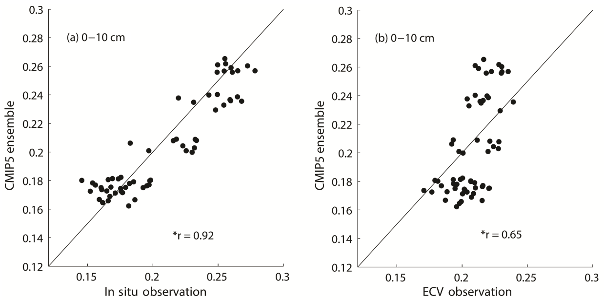
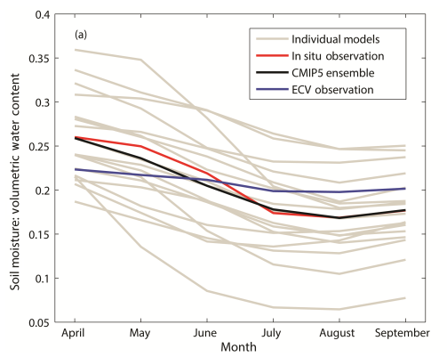
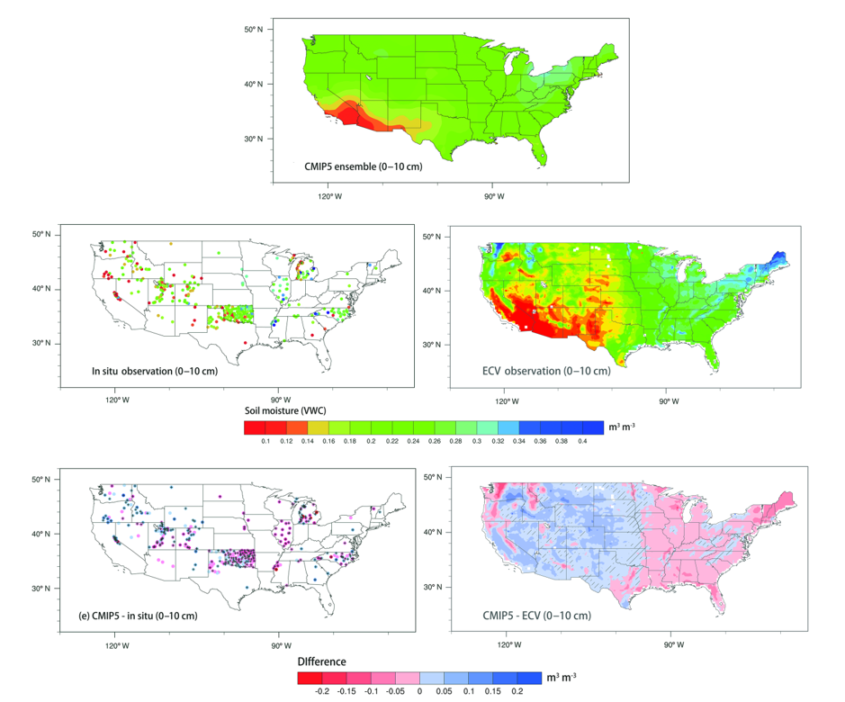
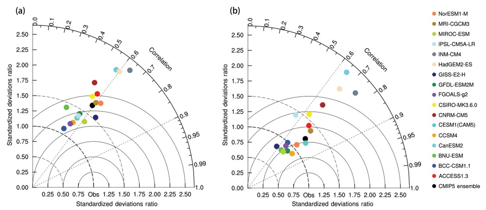
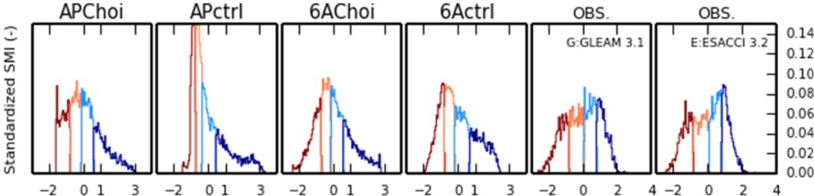
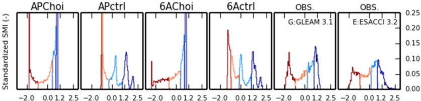

1.5.1. Satellite data benchmarking for Earth System Models#
Production date: 11-2025
Produced by: CNR-ISMAR
🌍 Use case: Validation of Soil Moisture from global Climate Models#
❓ Quality assessment question#
Is the satellite-based soil moisture record complete enough to assess Land Surface Models outputs?
Earth System Models (ESMs) are designed to simulate the Earth’s climate and its evolution. The climate projections they provide are essential for anticipating the impacts of climate change, making it crucial to assess their ability to realistically represent the interactions among the components of the Earth system, from which regional and global climate patterns emerge. Among these components, the land surface plays a central role, as it modulates the exchange of energy, water, and carbon between the soil, vegetation, and atmosphere. Land Surface Models (LSMs), which are embedded within ESMs, simulate key terrestrial variables such as soil moisture, soil temperature, snow cover, evapotranspiration, runoff, and vegetation dynamics. Soil moisture, in particular, is a critical variable because it directly influences land–atmosphere fluxes, surface energy balance, and hydrological processes, and thus strongly affects the modelled climate response at both regional and global scales. It is also one of the direct measures of drought, used to monitor real time and assess future drought conditions.
Several validation studies of this variable have been conducted using both in-situ measurements and satellite-based observations. While in-situ measurements are generally regarded as the most reliable reference, satellite observations offer much broader coverage. Nevertheless, the comparison between satellite-observed and simulated soil moisture is not straightforward. Differences in the soil depth represented, uncertainties related to retrieval algorithms, limitations associated with microwave signal penetration, and the strong dependence of simulated soil moisture on model structure and parameterisations all contribute to the complexity of evaluation.
Given these limitations, it is common practice in model evaluation studies to focus not only on direct comparisons of mean soil moisture values, but also on metrics that are less sensitive to absolute biases. Here we extract results from recent scientific literature, showing the methods through which the satellite-based soil moisture datasets, along with in-situ measurements, are used to carry on the evaluation of modelled soil moisture performance, with a particular focus on the European Space Agency Climate Change Initiative (ESA-CCI) dataset usage to benchmark models involved in the Coupled Models Intercomparison Project (CMIP).
📢 Quality assessment statements#
These are the key outcomes of this assessment
The ESA-CCI soil moisture dataset provides long-term, global coverage, representing a major advantage over in situ measurements
The combined product mitigates the limitations of individual sensors; however, gaps remain and may affect regional or seasonal analyses
It provides estimates of near-surface soil moisture, which limits its direct use for validating simulations, although it can still offer indirect insights into root-zone soil moisture
Although this product is often treated as observations, it strongly depends on the underlying retrieval algorithms; therefore, caution is required when interpreting absolute values
Given these characteristics, this dataset is widely used to assess surface soil moisture in Earth system models, as it is considered sufficiently comprehensive in both spatial and temporal terms
📋 Methodology#
Spatial and temporal analyses of soil moisture typically rely on metrics such as bias, linear correlation, and root mean square error. Here, we refer to results from Yuan and Quiring (2017) [1], although similar approaches can be found for example in Wang et al. (2022) [2], Massoud et al. (2025) [3] and Raoult et al. (2021) [4]. These studies, along with in-situ measurements such as FLUXNET, use the combined soil moisture product from the ESA Climate Change Initiative (ESA-CCI COM) as observational reference dataset, which provides global daily soil moisture fields at 0.25 degrees spatial resolution from 1978 to present and represents the near-surface soil moisture conditions.
This product corresponds to a Level-3S dataset, meaning that observations from multiple active and passive microwave satellite sensors are first merged and then mapped onto a common regular grid. This is achieved through cumulative distribution function (CDF) matching of each pixel against long-term LSM-based soil moisture, specifically from GLDAS-Noah. Despite this multi-sensor merging, the dataset is not gap-free. Retrievals may be unavailable in regions where microwave observations are unreliable, such as areas with dense vegetation, snow cover, frozen soils, complex topography, or radio frequency interference [5]. In Yuan and Quiring (2017), where the area of interest is the contiguous United States, the analysis is therefore restricted to the warm season, as satellite-based soil moisture data are unavailable during the cold season in northern regions.
In Guan et al. (2023) [6] it can be found a comprehensive intercomparison of satellite, reanalysis and climate models datasets with the aim of evaluating the consistency and drivers of long-term trends in soil moisture at the global scale, making use of the long temporal coverage and global extent of the ESA-CCI dataset, which constitute major strengths compared to in situ measurements. Among other results, they show that the spatial correlations between ESA-CCI and the other datasets show noticeable increases in the last 10 years, because of the improving quality of this product due to more advanced satellite technologies and retrieval algorithms. However, when comparing long-term trends they show that ESA-CCI differs from the other datasets, showing wet areas where other all show drying.
Both Guan et al. (2023) and Yuan and Quiring (2017) argue that, despite the scaling procedure applied during dataset construction, the ESA-CCI COM product can still be used as an independent dataset and therefore directly used to evaluate model performance and compute correlation statistics. In this sense, a different approach is instead used in Cheruy et al. (2020) [7]. In that work, the representation of the land‐atmosphere coupled system by the IPSL‐Climate Model is evaluated against observations and compared with simulations from the previous version. The observational datasets include ESA-CCI COM and the Global Land Evaporation Amsterdam Model v3 (GLEAM v3) [8], which provides estimates of terrestrial evaporation and root-zone soil moisture from satellite data. GLEAM v3 spans 1980–2015, with daily temporal resolution and a spatial resolution of 0.25°. Because both GLEAM and ESA-CCI soil moisture products depend on underlying models and assumptions, authors use caution when interpreting their absolute values. As defined by Koster et al. (2009; see their Equation 1) [9], the standardized Soil Moisture Index (SMI) rather than raw soil moisture values is preferred.
An important characteristic of the ESA-CCI dataset is the depth represented by the measurements. Microwave sensors typically capture soil moisture within the top ~5 cm of the soil, i.e., near-surface conditions. However, root-zone soil moisture is equally important for hydrological and climate studies, yet much more difficult to observe directly over long time periods. It is therefore worth noting that ESA-CCI surface soil moisture has been used as input to infer root-zone conditions or to initialize models that simulate them, as in Tobin et al. (2017) [10] and Pasik et al. (2023) [11]. This approach can help generate long-term, observation-based root-zone datasets suitable for comparison with LSM outputs.
Lastly, although no CMIP6 model is involved, we mention the study of Wu et al. [12]. Here, the triple collocation method is used to minimize the uncertainty during the validation process which involves the ESA-CCI COM dataset, with respect to in-situ data and the outputs from the Variable Infiltration Capacity, a Land Surface Model widely used in China. This highlights the fact that, whilst satellite observations offer many advantages, caution is advised when using them as ground truth.
Results are shown for:
📈 Analysis and results#
1. Evaluation of model ensemble#
{kind=link}

Fig. 1.5.1.1 Comparison of soil moisture from the CMIP5 ensemble with in situ and satellite-derived (ECV) soil moisture. Each point represents monthly soil moisture data from the warm season (April to September) that have been spatially averaged over CONUS (2003–2012). Panel (a) indicates CMIP5 ensemble versus in situ observations in the 0–10 cm soil layer; (b) CMIP5 ensemble versus ECV in the 0–10 cm soil layer; * denotes statistically significant correlation at 95% confidence level. Reproduced after [1], under CC-BY licence.#
The figure above shows the relationship between the ensemble mean of a subset of 17 CMIP Phase 5 models and observed soil moisture during the warm season. Each point represents monthly data that have been spatially averaged over contiguos United States (CONUS). In-situ soil moisture data were obtained from North American Soil Moisture Database. The period under consideration is 2003–2012, as defined by the duration of the CMIP5 extended historical experiment. It can be seen that there is a weaker relationship between the CMIP5 ensemble and satellite-based soil moisture with respect to in-situ measurements, with \(r\) being 0.65 against 0.92. The ESA-CCI dataset only varies from ∼ 0.18 to 0.24 \(cm^{3} cm^{−3}\), while CMIP5 varies from ∼ 0.16 to 0.27 \(cm^{3} cm^{−3}\), suggesting that the satellite-based soil moisture has less variability and tends to be systematically greater than CMIP5 during drier months and systematically lower than CMIP5 during wetter months. This is confirmed by the seasonal-scale analysis shown in the figure below. Both the CMIP5 ensemble and in-situ observations exhibit a similar seasonal cycle in terms of both magnitude and timing, with soil moisture decreasing until August and then increasing again in September. In contrast, the ESA-CCI shows limited monthly variability and exhibits a very weak seasonal cycle, which corresponds neither to the magnitude nor the timing observed.
{kind=link}

Fig. 1.5.1.2 Mean monthly soil moisture (2003–2012) during the warm season (April to September) in the 0–10 cm soil layer. Data are spatially averaged over CONUS. Figures show the monthly mean soil moisture from the in situ observations (red line), ECV satellite data (blue line), CMIP5 ensemble mean (black line) and the individual CMIP5 models (grey lines). Reproduced after [1], under CC-BY licence.#
With regard to spatial analysis, the maps below show average soil moisture for the period April to September. The overall spatial picture from the ESA-CCI is consistent with that of CMIP5, with the former exhibiting greater spatial heterogeneity than the models. This is partly attributable to its higher spatial resolution. For example, ECA-CCI shows that the regions with relatively low soil water content during the warm season (VWC < 0.2) are much more spatially extensive than in CMIP5. Similarly, the areas with relatively high soil water content (VWC > 0.3) are also more extensive with ESA-CCI. These spatial patterns of the differences between satellite-based and CMIP5 are similar to those seen with the in-situ observations, with he majority of statistically significant (p < 0.05) differences concentrated in the places where CMIP5 is wetter. Here we can thus conclude that CMIP5 tends to have wet biases in the western US and dry biases in the eastern US with respect to observations.
{kind=link}

Fig. 1.5.1.3 Mean 0–10 cm soil moisture (Volumetric Water Content in \(m^{3} m^{−3}\)) over CONUS (2003–2012) during the warm season (April to September) for (top) CMIP5 ensemble, (centre) observed soil moisture and (bottom) the difference between them. Hatches denote statistically significant difference at 95% confidence level. Reproduced after [1], under CC-BY licence.#
2. Evaluation of individual models#
The performance of each CMIP5 model is also evaluated using correlation, RMSE and relative standard deviation). These metrics are represented in the figure below using a Taylor diagram [13]. Correlations (\(r\)) between simulated 0–10 cm soil moisture and satellite-based observations (left) are all lower than 0.7. They tend to be clustered around 0.6, while correlations between the CMIP5 models and the in-situ soil moisture observations (right) are more variable. The radial distance from the origin represents the standardized deviation of the CMIP5 models relative to the standardized deviation of the observations. All the models show larger variations than ESA-CCI soil moisture, while only 10 (out of 17) models demonstrate larger variations than in-situ soil moisture, thus confirming what was found in the previous section.
{kind=link}

Fig. 1.5.1.4 Taylor diagrams for the CMIP5 models based on the (a) ECV satellite data, (b) in situ observations in the 0–10 cm layer. The azimuthal angle represents the correlation coefficient, and radial distance is the standard deviation normalized to observations. Reproduced after [1], under CC-BY licence.#
Among the Earth System Models evaluated in Yang and Quiring (2017), there is the IPSL-CM5A-LR, the low-resolution climate model developed by the Institut Pierre Simon Laplace, which showed one of the lowest correlation with the in-situ observations. Between Phase 5 and Phase 6 of CMIP, its atmospheric, land surface and hydrological components were improved, with the most significant changes relating to soil hydrology, snow cover and background albedo [14]. To document the impact of the changes, in Cheruy et al. (2020), four different configurations are considered, combining final versions of atmospheric physics (AP and 6A) and of the soil hydrology (Choi and ctrl), namely APChoi (corresponding to the IPSL‐CM5A in the CMIP5 database), APctrl, 6AChoi and 6Actrl (corresponding to the IPSL‐CM6A in the CMIP6 database). A number of relevant variables from different datasets are used as references: radiation, air temperature, albedo, snow cover, evapotranspiration, surface soil moisture, precipitation, horizontal winds, water, river discharge.
With regard to soil moisture, as mentioned in the Methodology section, direct comparison of absolute values is avoided. Based on monthly values for a 10-year period for which all observations are available (2001–2010), the surface soil moisture distributions for the four reference configurations and for the different observation sets are constructed through the standardization procedure. The focus is on two hotspot regions [15], where the soil moisture‐atmosphere coupling is strong: the Central North America (CNA) region and a box in the Sahel (−10, 30°E, 0–20°N), shown below in this order.
The soil‐moisture information at monthly time scale is here mostly used to discriminate between very dry, moderately dry, moderately moist, and very moist soils. In this analysis, the fact that ESA-CCI is more correlated with soil moisture up to a depth of 5 \(cm\), while GLEAM takes into account the first 0–10 \(cm\) as done in the simulations, is not explicitly considered, thus contributing to the differences. Overall, the new multilayer hydrology gives a representation of the surface soil moisture in better agreement with available observations.
{kind=link}

Fig. 1.5.1.5 Regional histograms computed from monthly values of the individual grid points corresponding to the CNA region in JJA. The histograms are constructed for a 10‐year long period in which all surface standardized soil moisture observations are available (2001–2010). The first four images correspond to the four reference experiments and the last two to the different sets of observations indicated above the corresponding histograms. The colors depict the PDF from the minimum to first quartile (dark red) from first quartile to the median (pale orange), from median to third quartile (cyan line), and from the third quartile to the maximum (blue line). Reproduced after [7], under CC-BY licence.#
{kind=link}

Fig. 1.5.1.6 Regional histograms computed from monthly values of the individual grid points corresponding to the Sahel box (−10:30°E, 0:20°N) in JJA. The histograms are constructed for a 10‐year long period in which all surface standardized soil moisture observations are available (2001–2010). The first four images correspond to the reference experiments, and the last two correspond to the different sets of observations indicated above the corresponding histograms. The colors depict the PDF from the minimum to first quartile (dark red) from first quartile to the median (pale orange), from median to third quartile (cyan line), and from the third quartile to the maximum (blue line). The y‐axis is cut at .25 (representing 25% of the quartile) for the sake of readability but the driest quartile peaks at 0.8 (corresponding to 80% of the quartile) for APctrl and the moister quartile peaks at .8 for APChoi and APctrl. Reproduced after [7], under CC-BY licence.#
ℹ️ If you want to know more#
ESGF Data Statistics - CMIP6 project
Key resources#
Some key resources and further readings were linked throughout this assessment.
The CDS catalogue entries for the data used were:
Soil moisture gridded data from 1978 to present: https://cds.climate.copernicus.eu/datasets/satellite-soil-moisture?tab=overview
CMIP6 climate projections: https://cds.climate.copernicus.eu/datasets/projections-cmip6?tab=ov
Other datasets can be accessed at:
North American Soil Moisture Database (NASMD): https://doi.org/10.1175/BAMS-D-13-00263.1
GLEAM: https://www.gleam.eu/
References#
[1] Yuan, S. and Quiring, S. M.: Evaluation of soil moisture in CMIP5 simulations over the contiguous United States using in situ and satellite observations, Hydrol. Earth Syst. Sci., 21, 2203–2218, https://doi.org/10.5194/hess-21-2203-2017, 2017
[2] Wang, A., Kong, X., Chen, Y., & Ma, X. (2022). Evaluation of soil moisture in CMIP6 multimodel simulations over conterminous China. Journal of Geophysical Research: Atmospheres, 127, e2022JD037072
[3] Massoud, E. C., Collier, N., Wang, Y., Mao, J., Harpold, A., Kannenberg, S. A., Koren, G., Kumar, M., Raghav, P., Ray, P., Shi, M., Tao, J., Vasu, S. P., Wang, H., Zhu, Q., and Hoffman, F. M.: Benchmarking soil moisture and its relationship to ecohydrologic variables in Earth System Models, Geosci. Model Dev., 19, 3427–3453, https://doi.org/10.5194/gmd-19-3427-2026, 2026
[4] Raoult, N., C. Ottlé, P. Peylin, V. Bastrikov, and P. Maugis, 2021: Evaluating and Optimizing Surface Soil Moisture Drydowns in the ORCHIDEE Land Surface Model at In Situ Locations. J. Hydrometeor., 22, 1025–1043, https://doi.org/10.1175/JHM-D-20-0115.1
[5] Dorigo, W. A., Wagner, W., Albergel, C., Albrecht, F., Balsamo, G., Brocca, L., et al. (2017). ESA CCI Soil Moisture for improved Earth system understanding: State-of-the art and future directions. Remote Sensing of Environment, 203, 185–215
[6] Yansong Guan, Xihui Gu, Louise J. Slater, Jianfeng Li, Dongdong Kong, Xiang Zhang, Spatio-temporal variations in global surface soil moisture based on multiple datasets: Intercomparison and climate drivers, Journal of Hydrology, Volume 625, Part B, 2023, 130095, ISSN 0022-1694
[7] Cheruy F., A. Ducharne, F. Hourdin, I. Musat, E. Vignon, G. Gastineau, V. Bastrikov. N. Vuichard, B. Diallo, J.L. Dufresne, J. Ghattas, J.Y. Grandpeix, A. Idelkadi, L. Mellul, F. Maigna, M. Nenegoz, C. Ottlé, P. Peylin, F. Wang, Y. Zhao, Improved near surface continental climate in IPSL-CM6A-LR by combined evolutions of atmospheric and land surface physics. Journal of Advances in Modeling Earth System, 12, e2019MS002005, https://doi.org/10.1029/2019MS002005, 2020
[8] Martens, B., Miralles, D. G., Lievens, H., van der Schalie, R., de Jeu, R. A. M., Fernández‐Prieto, D., et al. (2017). GLEAM v3: satellite‐based land evaporation and rootzone soil moisture. Geoscientific Model Development, 10(5), 1903–1925. https://doi.org/10.5194/gmd-10-1903-2017
[9] Koster, R. D., Guo, Z., Yang, R., Dirmeyer, P. A., Mitchell, K., & Puma, M. J. (2009). On the nature of soil moisture in land surface models. Journal of Climate, 22(16), 4322–4335
[10] Tobin, K. J., Torres, R., Crow, W. T., and Bennett, M. E.: Multi-decadal analysis of root-zone soil moisture applying the exponential filter across CONUS, Hydrol. Earth Syst. Sci., 21, 4403–4417, https://doi.org/10.5194/hess-21-4403-2017, 2017
[11] Pasik, A., Gruber, A., Preimesberger, W., De Santis, D., and Dorigo, W.: Uncertainty estimation for a new exponential-filter-based long-term root-zone soil moisture dataset from Copernicus Climate Change Service (C3S) surface observations, Geosci. Model Dev., 16, 4957–4976, https://doi.org/10.5194/gmd-16-4957-2023, 2023
[12] Wu, X., Lu, G., Wu, Z., He, H., Scanlon, T., & Dorigo, W. (2020). Triple Collocation-Based Assessment of Satellite Soil Moisture Products with In Situ Measurements in China: Understanding the Error Sources. Remote Sensing, 12(14), 2275. https://doi.org/10.3390/rs12142275
[13] Taylor, K. E. (2001), Summarizing multiple aspects of model performance in a single diagram, J. Geophys. Res., 106(D7), 7183–7192, doi:10.1029/2000JD900719
[14] Hourdin, F., Rio, C., Grandpeix, J., Madeleine, J., Cheruy, F., Rochetin, N., et al. (2020). LMDZ6A: The atmospheric component of the IPSL climate model with improved and better tuned physics. Journal of Advances in Modeling Earth Systems, 12, e2019MS001892
[15] Koster, R., Dirmeyer, P., Guo, Z., Bonan, G., Chan, E., Cox, P., et al. (2004). Regions of strong coupling between soil moisture and precipitation. Science, 305(5687), 1138